Hands-Free Microphone Is Inoperative
NOTE:The microphone is located near the map light above the rear view mirror.
1. Before you begin, run the Components Check described on the first page and verify the problem.
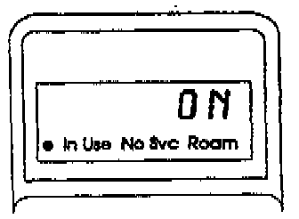
2. Turn the ignition switch to I (Accessory). Then turn the phone on, and verify that it's unlocked. The handset display should read ON and stay ON throughout this test.
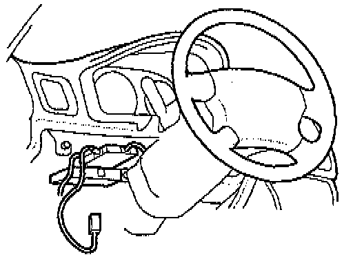
3. Remove the lower left dash panel so you'll be able to reach the 6-P connector on the control box (mounted near the steering column).
4. Remove the map light assembly to expose the microphone connector.
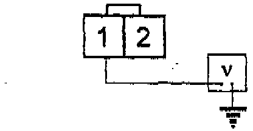
5. Set your DVOM to volts. Backprobe the microphone connector at terminal 1 (yellow wire) and measure voltage to ground.
Is there about 9 volts?
Yes - Go to the next step.
No - Go to step 8.
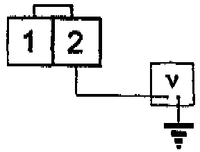
6. Backprobe the connector at terminal 2 (white wire) and measure voltage to ground.
Is voltage less than 0.2V?
Yes - Go to the next step.
No - Go to step 22.
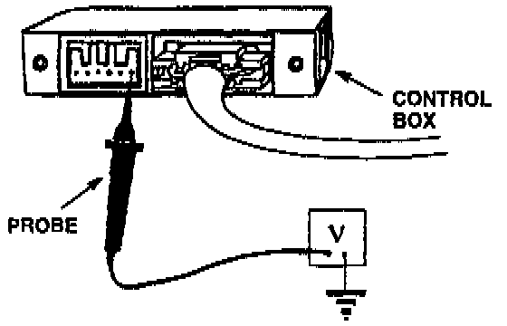
7. Backprobe the control box 6-P connector between terminal 6 and ground while blowing hard into the microphone from about one inch away.
Does the voltage drop to about 8V when you're blowing into the microphone?
Yes - Replace the transceiver.[ ]
No - Replace the microphone.[ ]
8. Disconnect the 2-P connector from the microphone and the 6-P connector from the control box.
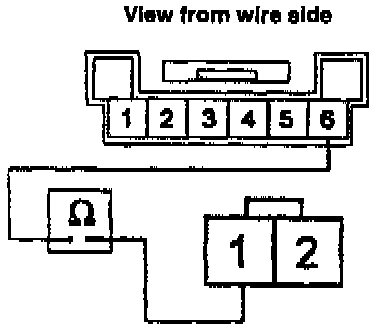
9. Set your DVOM to ohms, and check continuity between terminal 1 (yellow wire) of the 2-P connector and terminal 6 of the 6-P connector.
Is there continuity? Yes - Go to the next step. No - Repair the open wire.5
The [ ] symbol indicates the end of troubleshooting for this symptom.
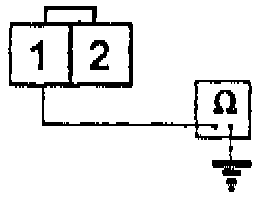
10. At the 2-P connector, check continuity between terminal 1 (yellow wire) and ground.
Is there continuity?
Yes - Repair the shorted wire.[ ]
No - Go to the next step.
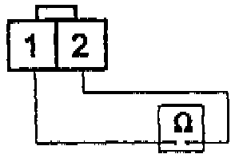
11. Check continuity between the 2-P connector terminals.
Is there continuity?
Yes - Repair the shorted wires.[ ]
No - Go to the next step.
12. Reconnect the 6-P connector to the control box, but leave the 2-P connector disconnected from the microphone. The phone should be on.
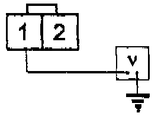
13. Set the DVOM to volts, then backprobe the 2-P connector at terminal 1 and measure voltage to around.
Is there about 9.5 volts?
Yes - Replace the microphone.[ ]
No - Go to the next step.
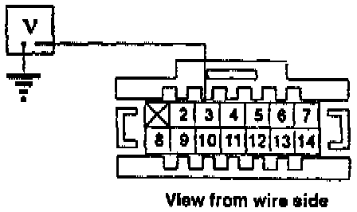
14. Backprobe the 14-P control box connector at terminal 3 and measure voltage to ground (the microphone must remain disconnected).
Is there about 9.5 volts?
Yes - Replace the control box.[ ]
No - Go to the next step.
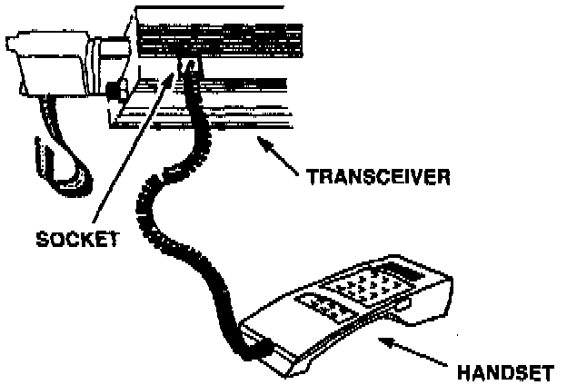
15. Disconnect the 14-P connector from the control box. Then disconnect the handset from the console and take it to the trunk. Open the trunk, remove the rubber plug from the socket in the underside of the transceiver, and plug the handset into that socket.
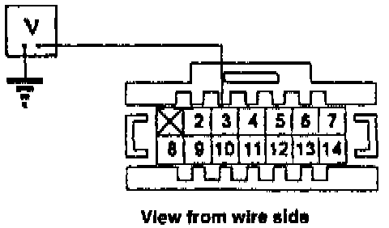
16. At the 14-P connector, check for voltage between terminal 3 and ground.
Is them about 9.5 volts?
Yes - Replace the control box.[ ]
No - Go to the next step.
17. Disconnect the 25-P connector from the transceiver and leave the 14-P connector disconnected from the control box.
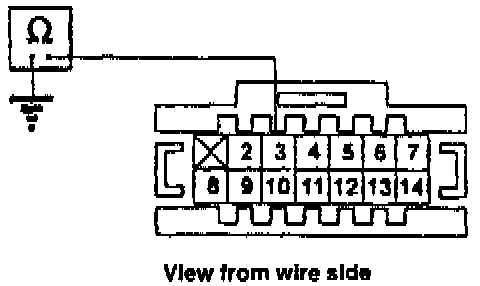
18. Set the DVOM to ohms. Then, at the 14-P connector, check for continuity between terminal 3 and ground.
Is there continuity?
Yes - Repair the shorted wire between the 25-P transceiver connector and the 14-P control box connector.[ ]
No - Go to the next step.
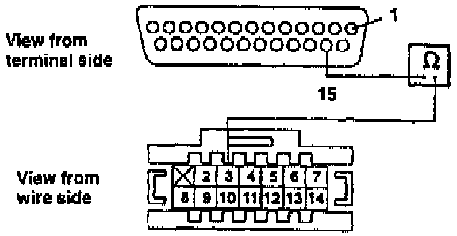
19. Check for continuity between terminal 15 of the 25-pin connector and terminal 3 of the 14-P connector.
Is there continuity?
Yes - Go to the next step.
No - Go to step 21.
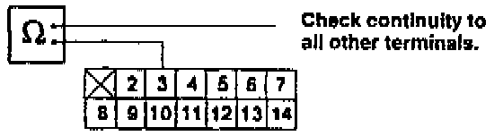
20. Check continuity between terminal 3 of the 14-P control box connector and each of the other terminals in that connector.
Is there continuity between terminal 3 and any other terminal in the connector?
Yes - Repair or replace the shorted wires between the 25-P transceiver connector and the 14-P control box connector.[ ]
No - Replace the transceiver.[ ]
21. Check the connections at both DIN connectors (one at the control box, one at the transceiver).
Are the DIN connectors OK?
Yes - Repair the open wire between the 25-P transceiver connector and the 14-P control box connector.[ ]
No - Repair the faulty DIN connectors.[ ]
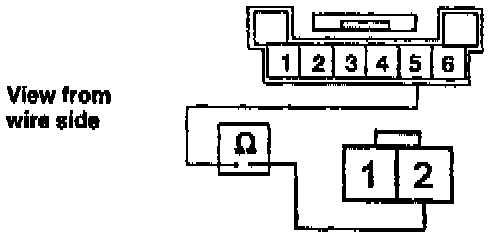
22. Set your DVOM to ohms, then disconnect the 6-P connector from the control box, and the 2-P connector from the microphone. Check for continuity between terminal 2 of the 2-P connector and terminal 5 of the 6-P connector.
Is there continuity?
Yes - Go to the next step.
No - Repair open wire; check the white wire in the 3-P connector at the control box.[ ]
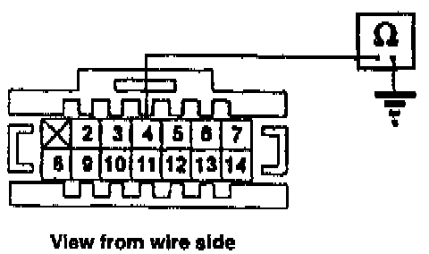
23. Backprobe the 14-P control box connector at terminal 4 and check continuity to ground.
Is there continuity?
Yes - Replace the control box.[ ]
No - Go to the next step.
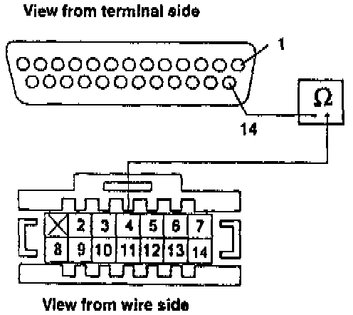
24. Disconnect the 14-P control box connector and the 25-P transceiver connector. Then check for continuity between terminal 4 of the 14-P connector and terminal 14 of the 25-P connector.
Is there continuity? Yes - Replace the transceiver.[ ]
No - Go to the next step.
25. Check the connections at both DIN connectors (one at the control box, one at the transceiver).
Are the DIN connectors OK?
Yes - Repair/replace the open wire between the 25-P transceiver connector and the 14-P control box connector.[ ]
No - Repair the faulty DIN connectors.[ ]
The [ ] "symbol indicates the end of troubleshooting for this symptom.